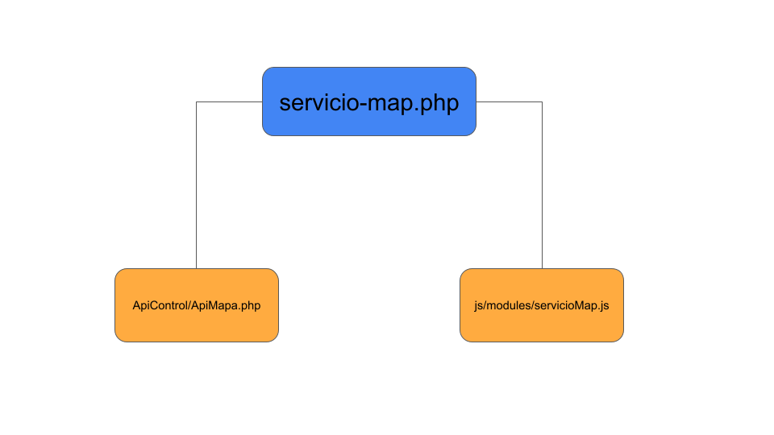

Documentación para el programdor
El servicio de información y conocimiento de localidades rurales (SICLR) es una aplicación cuyo código se encuentra principalmente en código PHP, que se usa para la vista y para el controlador. Existen también archivos JavaScript, los cuales sirven para dar interactividad a la aplicación a medida que el usuario está navegando dentro de ella.
Enseguida se muestra la estructura de la aplicación y la descripción de cada uno de sus archivos y componentes.
- ApiControl
- ApiControl.php
- ApiMain.php
- ApiMapa.php
- ApiSelect.php
- ApiServicioMap.php
- ApiSessionSecurity.php
- index.php
- Router.php
- assets
- jquery-1.9.1.min.js
- nicepage.css
- nicepage.js
- Autoload/
- Autoload.php
- css-geo/
- font-awesome/
- plugins/
- Database/
- Database.php
- docs/
- programador/
- docs_programador.html
- usuario/
- docs_usuario.html
- programador/
- footable/*
- Item/
- Item/
- images/*
- Item
- Item
- img/
- invalido.png
- valido.png
- js-geo/
- modules
- inicio.js
- mapa.js
- select - copia.js
- select.js
- servicioMap.js
- plugins/*
- modules
- mapa/*
- Item
- Item
- modules/*
- Item
- Item
- php-getting-started/
- Item
- Item
- access-config.php
- block.php
- composer.json
- Database.php
- footer.php
- header.php
- index.php
- info.php
- LICENSE
- mapa.php
- README.md
- select.php
- servicio-map.php
El SICLR cuenta con dos opciones o formas de acceso a la información y descarga de datos: opción 1 y opción 2.
Opción 1 del SICLR
Mediante la opción 1 el usuario accede a la información a través del estado y municipio y tiene la posibilidad de seleccionar una, varias o todas las localidades del municipio a través de un cuadro de búsqueda con una lista desplegable de localidades, en donde el usuario puede escribir y seleccionar, ya que tiene la función de autocompletado.
El siguiente diagrama muestra los archivos relacionados para la opción 1 del SICLR

Opción 2 del SICLR
El siguiente diagrama muestra los archivos relacionados para la opción 2 del SICLR
